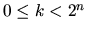

| k | 00110011... | o(n=2,k) |
| 0 | 00 | 0 |
| 1 | 01 |
1 |
| 2 | 11 |
3 |
| 3 | 10 |
2 |
| Problem B: Ouroboros Snake |
Ouroboros was a mythical snake in Ancient Egypt. It has its tail inside its mouth and continuously devours itself.
Ouroboros numbers are binary numbers of 2n bits that have the property of generating the whole set of numbers from 0 to 2n-1 as follows: To produce all of them we place the 2n bits wrapped in a circle so that the last bit goes before the first one. Then we can denote all 2n different strings with n bits starting each time with the next bit in the circle.
For example, for n=2 there are only four Ouroboros numbers. These are 0011, 0110, 1100 and 1001. For 0011, the following diagram and table depicts the process of finding all the bitstrings:
| k | 00110011... | o(n=2,k) |
| 0 | 00 | 0 |
| 1 | 01 |
1 |
| 2 | 11 |
3 |
| 3 | 10 |
2 |
Your program will compute the function o(n,k), where n > 0 and . This function calculates the k-th number inside the smallest Ouroboros number of size n-bits.
The input starts with a line containing the number of test cases. For each test case you will be given a line with two integers n (0<n<22) and k ( ).
For every test case your output must evaluate the function o(n,k) and print the result on a line by itself.
4 2 0 2 1 2 2 2 3
0 1 3 2